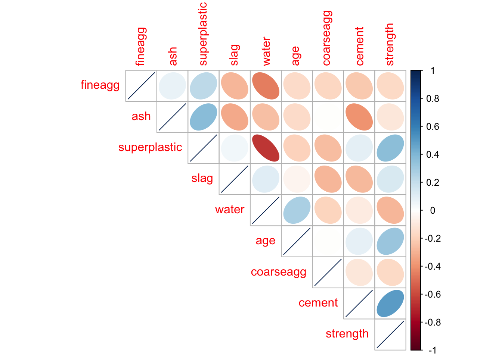
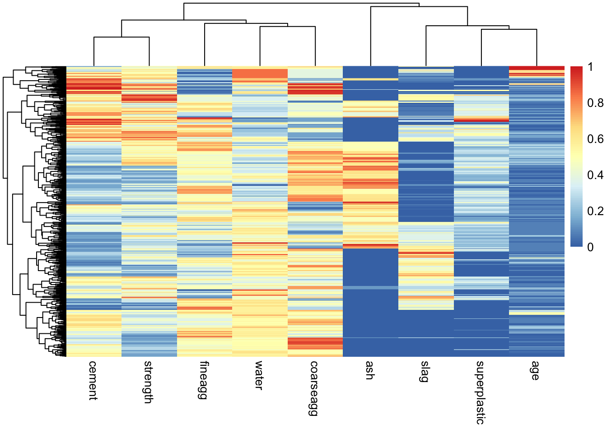
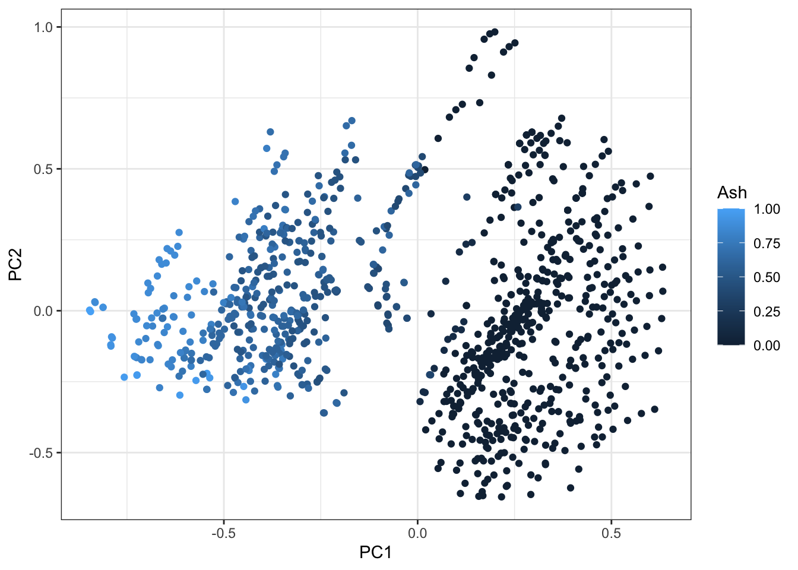
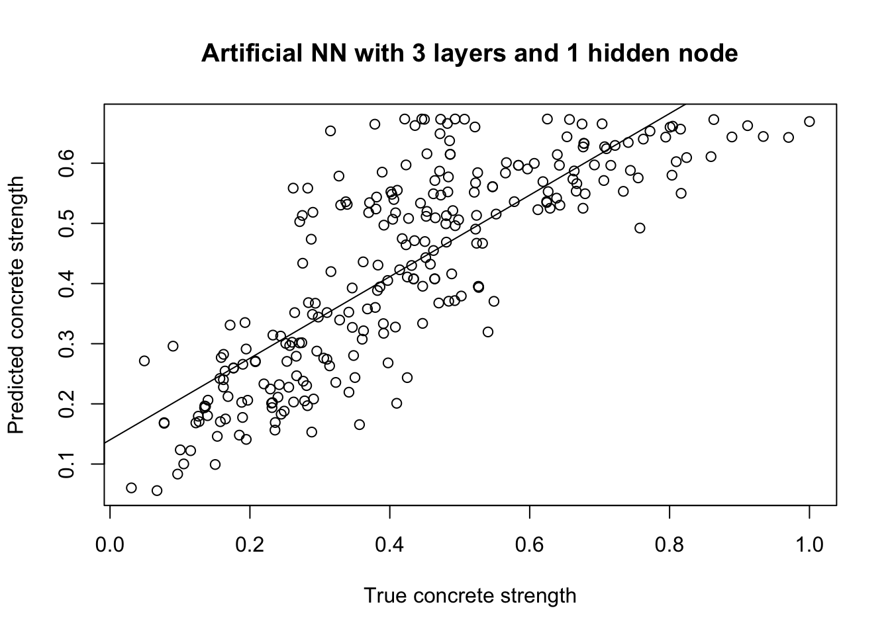

Chapter 7 Machine Learning Fundamentals: Predicting Variables Using Neural Networks
In the previous sessions we learnt how to read and explore data with multiple variables/dimensions in R, as well as how to build a spam filter using machine learning (Naive Bayes). Finally, we will learn how to build a simple neural network using R.
Recall that neural networks are machine learning algorithms inspired by the biology of the brain and which can be used for the two following tasks:
Prediction: Using a set of independent variables to “predict” a dependent variable (just as in linear regression, only with multiple variables).
Classification: Clasifying an individual observation into one of the possible groups of classes.
In this session we will build a neural network to predict the strength of concrete. To do so, we will use data from 1030 different types of concrete, each with a different age and composition.
Before starting this session we need to install a new R libraries called “neuralnet.” To install this library, simply run the following line of code.
install.packages("neuralnet")Let’s now load the required libraries.
library(neuralnet)
library(pheatmap)
library(corrplot)
library(ggplot2)You can find the data for this session in the “Data” directory, along with the other materials for this course. The file is called “concrete.csv”. Let’s read this into R.
concrete <- read.csv("./Data/concrete.csv")We use the head function to look at the first 6 lines of the table.
head(concrete)## cement slag ash water superplastic coarseagg fineagg age strength
## 1 141.3 212.0 0.0 203.5 0.0 971.8 748.5 28 29.89
## 2 168.9 42.2 124.3 158.3 10.8 1080.8 796.2 14 23.51
## 3 250.0 0.0 95.7 187.4 5.5 956.9 861.2 28 29.22
## 4 266.0 114.0 0.0 228.0 0.0 932.0 670.0 28 45.85
## 5 154.8 183.4 0.0 193.3 9.1 1047.4 696.7 28 18.29
## 6 255.0 0.0 0.0 192.0 0.0 889.8 945.0 90 21.86We can see that this data contains measurements on the following characteristics of concrete:
- Amount of cement (kg/m3)
- Amount of slag (kg/m3)
- Amount of ash (kg/m3)
- Amount of water (kg/m3)
- Amount of superplasticizer (kg/m3)
- Amount of coarse aggregate (kg/m3)
- Amount of fine aggregate (kg/m3)
- Aging time (days)
- Compressive strength
Let’s now use the dim() function to find out how many samples of concrete were measured:
dim(concrete)## [1] 1030 9Our data contains measurements on 1,030 different samples of concrete.
7.1 Normalising data
Before analysing the data, let’s use the summary() function to find out how each variable behaves.
summary(concrete)## cement slag ash water superplastic coarseagg fineagg age strength
## Min. :102.0 Min. : 0.0 Min. : 0.00 Min. :121.8 Min. : 0.000 Min. : 801.0 Min. :594.0 Min. : 1.00 Min. : 2.33
## 1st Qu.:192.4 1st Qu.: 0.0 1st Qu.: 0.00 1st Qu.:164.9 1st Qu.: 0.000 1st Qu.: 932.0 1st Qu.:731.0 1st Qu.: 7.00 1st Qu.:23.71
## Median :272.9 Median : 22.0 Median : 0.00 Median :185.0 Median : 6.400 Median : 968.0 Median :779.5 Median : 28.00 Median :34.45
## Mean :281.2 Mean : 73.9 Mean : 54.19 Mean :181.6 Mean : 6.205 Mean : 972.9 Mean :773.6 Mean : 45.66 Mean :35.82
## 3rd Qu.:350.0 3rd Qu.:142.9 3rd Qu.:118.30 3rd Qu.:192.0 3rd Qu.:10.200 3rd Qu.:1029.4 3rd Qu.:824.0 3rd Qu.: 56.00 3rd Qu.:46.13
## Max. :540.0 Max. :359.4 Max. :200.10 Max. :247.0 Max. :32.200 Max. :1145.0 Max. :992.6 Max. :365.00 Max. :82.60Note that while the amount of cement can go from 102 to 540 kg/m3, the amount of coarse aggregate can go from 801 to 1029 kg/m3. These ranges are very different to each other, so we cannot compare simply compare both measurements! Moreover, NEURAL NETWORKS ONLY WORK ON VALUES CLOSE TO ZERO. Because of these two reasons, let’s “rescale” the values of all columns, so that they go from 0 to 1 only. This process is called “rescaling” or “normalisation”.
We define a function called “normalisation”, which takes a series of numbers (x) and normalises it, so that the numbers go from 0 to 1 only. The function finally resturns all of these “new x” values.
normalise <- function(x){
new.x <- (x -min(x))/(max(x)-min(x))
}Next, we apply this function to all the columns of our data. We do this using “apply”. We set the MARGIN to 2, because we want to apply the function to the columns. We store the new data in a variable called “concrete_norm” (norm for normalised).
concrete_norm <- as.data.frame(apply(concrete, MARGIN=2, normalise))Let’s use head() to look at the first lines of the data.
head(concrete_norm)## cement slag ash water superplastic coarseagg fineagg age strength
## 1 0.08972603 0.5898720 0.0000000 0.6525559 0.0000000 0.4965116 0.3876066 0.07417582 0.3433412
## 2 0.15273973 0.1174179 0.6211894 0.2915335 0.3354037 0.8133721 0.5072755 0.03571429 0.2638595
## 3 0.33789954 0.0000000 0.4782609 0.5239617 0.1708075 0.4531977 0.6703462 0.07417582 0.3349944
## 4 0.37442922 0.3171953 0.0000000 0.8482428 0.0000000 0.3808140 0.1906673 0.07417582 0.5421702
## 5 0.12054795 0.5102949 0.0000000 0.5710863 0.2826087 0.7162791 0.2576518 0.07417582 0.1988290
## 6 0.34931507 0.0000000 0.0000000 0.5607029 0.0000000 0.2581395 0.8805820 0.24450549 0.2433038We see that now all values are between zero and one. To verify that this is the case, let’s use the summary function.
summary(concrete_norm)## cement slag ash water superplastic coarseagg fineagg age strength
## Min. :0.0000 Min. :0.00000 Min. :0.0000 Min. :0.0000 Min. :0.0000 Min. :0.0000 Min. :0.0000 Min. :0.00000 Min. :0.0000
## 1st Qu.:0.2063 1st Qu.:0.00000 1st Qu.:0.0000 1st Qu.:0.3442 1st Qu.:0.0000 1st Qu.:0.3808 1st Qu.:0.3436 1st Qu.:0.01648 1st Qu.:0.2664
## Median :0.3902 Median :0.06121 Median :0.0000 Median :0.5048 Median :0.1988 Median :0.4855 Median :0.4654 Median :0.07418 Median :0.4001
## Mean :0.4091 Mean :0.20561 Mean :0.2708 Mean :0.4774 Mean :0.1927 Mean :0.4998 Mean :0.4505 Mean :0.12270 Mean :0.4172
## 3rd Qu.:0.5662 3rd Qu.:0.39775 3rd Qu.:0.5912 3rd Qu.:0.5607 3rd Qu.:0.3168 3rd Qu.:0.6640 3rd Qu.:0.5770 3rd Qu.:0.15110 3rd Qu.:0.5457
## Max. :1.0000 Max. :1.00000 Max. :1.0000 Max. :1.0000 Max. :1.0000 Max. :1.0000 Max. :1.0000 Max. :1.00000 Max. :1.0000Indeed, notice how the minimum and maximum values are 0 and 1 respectively for ALL columns in our table. Now we are ready to analyse the data.
7.2 Visualising data
Before building our neural network, let’s use the techniques we have learnt before to explore the concrete data. For example, let’s calculate the correlation matrix.
corrmat <- cor(concrete_norm)Let’s use corrplot() to visualise the correlation matrix. We will ask R to plot the most similar variables together (recall that we can do this by setting order=“hclust”).
corrplot(corrmat,
type = "upper",
method = "ellipse",
order = "hclust")
We can already conclude some things from this graph. For example, the strength of concrete is highly correlated with the amount of cement we put in it. Thus, if we want to build stronger concrete we might need to add more cement. We can also see that the amount of superplasticizer is inversely proportional to the aging time. This might mean that as concrete ages, the plasticizer is degraded and disappears.
Let’s now use the data to build a heat map.
pheatmap(concrete_norm, show_rownames = F)
From this graph we get even further information. For instance, notice how there are at least 6 different “types” of concrete (you can see this in the way rows have been ordered into a tree).
Finally, let’s try to reduce the dimensions of the data using PCA.
pcs <- prcomp(concrete_norm)A closer look at PC1 and PC2 tells us that one of the main differences between different concretes is the amount of ash. In fact, PC1 (our most important new axis) separates concretes into those with low ash content and those with high ash content.
ggplot(data.frame(pcs$x), aes(PC1, PC2)) +
geom_point(aes(color=concrete_norm$ash)) +
scale_color_continuous(name="Ash") +
theme_bw()
We have learnt a lot from the data already, but we still do not know how to predict its strength. If we know the composition of a concrete sample, can we predict how strong it will be and, thus, which things we should and should not build with it? Let’s build a neural network to answer this question.
7.3 Creating neural network
Remember that machine learning is done in two steps: training and testing. Thus, let’s first divide the data into a training and a testing set.
7.3.1 Spliting data into training and testing sets
We will allocate 75% of our observations (773 in total) to the training data set and the remaining 25% (257) to the testing data set.
concrete_training <- concrete_norm[1:773,]
concrete_testing <- concrete_norm[773:1030,]7.3.2 Training neural network
Now we are able to build and test the neural network. To do this, we will use the neuralnet() function, specifying which are the independent and which the dependent variables (into a formula). For now, let’s build the most simple possible network: one with just one hidden node!
my_NN <- neuralnet(strength ~ cement + slag + ash + water +
superplastic + coarseagg + fineagg + age,
data = concrete_training,
hidden = 1)Our network has been trained! Let’s have a look at its shape (its topology) using the plot function.
plot(my_NN)Notice that it more than 1,000 iterations to build this network, despite it being so simple.
7.3.3 Testing neural network
Now we can test the performance of the network. We use the compute() function to try and predict the strength of concrete in the testing set.
results <- compute(my_NN, concrete_testing[,1:8])Let’s use head() to look at the first 6 predictions done by our network.
head(results$net.result)## [,1]
## 773 0.1937926
## 774 0.3271159
## 775 0.4669493
## 776 0.2376992
## 777 0.6725225
## 778 0.46438417.3.4 Evaluating performance
Finally, let’s evaluate how well these predictions are by comparing them with the true concrete strength. This is possible because we knew the true values from the beginning! Let’s build a scatter plot of prediciton versus reality.
plot(concrete_testing$strength, results$net.result,
main = "Artificial NN with 3 layers and 1 hidden node",
xlab="True concrete strength",
ylab="Predicted concrete strength")
abline(lm(results$net.result ~ concrete_testing$strength))
Notice how well the network perform, despite being so simple! In fact, if we calculate the correlation we’ll see that it is higher than 0.8
cor(concrete_testing$strength, results$net.result)## [,1]
## [1,] 0.80691527.4 Conclusions
Now you know how to build simple neural networks in R. You can apply this knowledge to predict or classify any data you might be interested in.
7.5 References
This turotial was adapted from:
- Lantz B. (2013). Chapter 7. Neural Networks and Support Vector Machines in Machine Learning with R. Birmingham: Packt Publishing.
Concrete strength data comes from the following study:
- Yeh IC. (1998). Modelling of strength of high performance concrete using artificial neural networks. Cemenr and Concrete Research. Vol 28. pp 1797-1808.